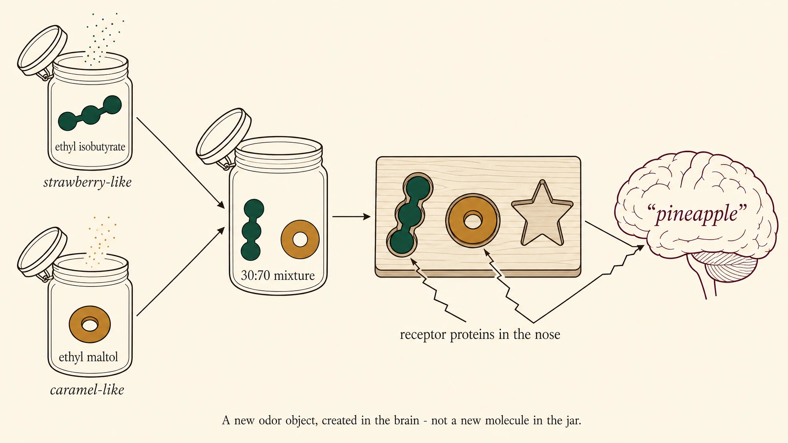
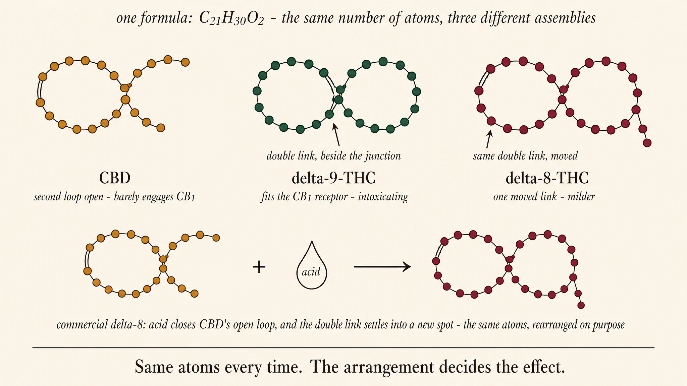
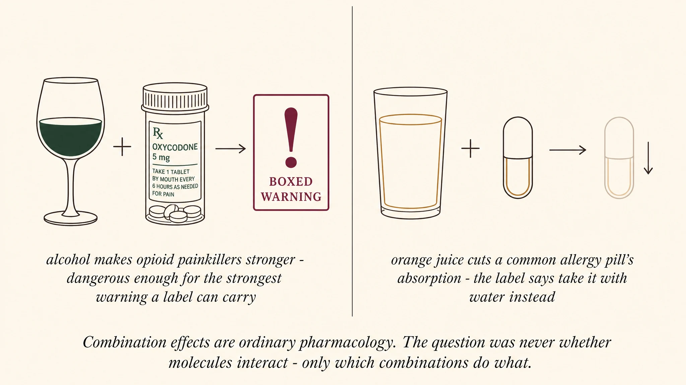

The aroma molecules of cannabis
A plant's smell is a borrowed language of molecules it shares with the rest of nature — and arrangement decides everything.
author: Denson Smith · 2026-06-30
Same atoms, different smell
The first thing the chemistry tells you: five of these terpenes are the same molecule by formula —
C₁₀H₁₆, 136.23 g/mol, the identical sixteen atoms — yet they smell nothing alike. The aroma lives in
the shape, not the formula (rotate them on the atlas page and you'll see how differently those same atoms are arranged).
The two heavier ones are likewise twins: β-caryophyllene (peppery) and humulene (hoppy) are both
C₁₅H₂₄ — humulene is α-caryophyllene, a structural isomer. One of them — β-caryophyllene — is also a drug: not a cannabinoid, but a terpene
found across other plants that happens to bind a cannabinoid receptor — a thread
the atlas page follows to the clinic.
The mirror twist: same atoms, same bonds, opposite hands
It goes one step further. Two molecules can share the formula and the entire bond map and still differ
the way your left hand differs from your right: mirror images that no rotation can superimpose (chemists call them
enantiomers). Your nose tells them apart, because smell receptors are proteins, and proteins are themselves
built one-handed — a mirror-image molecule docks into them differently. The textbook pair is carvone,
C₁₀H₁₄O: the R hand is the smell of spearmint; its mirror image, the S hand, is caraway and
dill. Below, the pair turns in opposite directions so the two stay perfect mirror images of each
other as they move — watch the red oxygen. Drag either one: every bond length and angle matches, and they
will never line up.
Limonene has hands too: the bright orange-peel citrus people mean by "limonene" is the R hand, (+)-limonene — the form the Johns Hopkins anxiety trial dosed — while its mirror, (−)-limonene, reads harsher: lemon-pine edging toward turpentine. (The atlas page's limonene card uses PubChem's hand-unspecified record; the citrus description belongs to the R hand.)

Illustration, not data: carvone's two hands drawn as mirror-image puzzle pieces. Each fits only its own receptor pocket — the (R)-(−) hand reads as spearmint, the (S)-(+) hand as caraway/dill — and smelled together, both qualities are perceived at once, not a new third smell (Pike, Enns & Hornung 1988).
Beyond terpenes — the flavorants that modify the base
Here's the twist the last few years of analytical work delivered (Oswald & Abstrax, ACS Omega 2021–2024): terpene profiles are remarkably similar across cultivars that smell nothing alike — so terpenes are the loud, pleasant base canvas, but they are not what makes one strain smell like gas and another like passionfruit. That comes from trace non-terpene "flavorants" — under 0.05% of the flower's mass, but with odor thresholds so low they punch far above their weight. And, exactly as you'd expect, they don't replace the terpenes — they modify them. Each flavorant class has a rotatable card in the atlas.
How they make it better — or worse
The flavorants don't add a separate note; they rewrite the whole percept. Real examples:
The mechanism is olfactory, not just chemical: the nose reads a mixture as one blended "odor object" (configural perception), and a potent trace molecule changes that blend two ways — by masking (it occupies an olfactory receptor without firing it, blocking a dominant terpene so harsh pine/herb recedes and finer notes surface) and by synergy (terpene + thiol don't smell like "pine + sulfur" — they fuse into a brand-new quality). The trace compound rewrites how the brain reads the entire terpene mixture.

Configural perception, illustrated: strawberry-like ethyl isobutyrate and caramel-like ethyl maltol, mixed 30:70, are read by the brain as one new odor object — pineapple — while nothing new exists in the jar (Le Berre et al. 2008; reviewed in Coureaud et al. 2022).
And a fair question the aroma story raises: do the flavorants stop at the nose? These are not inert perfumes — thiols, indoles, and volatile acids are potently biologically active classes of molecule, firing receptors at concentrations far below a part per million, which is exactly why you can smell them at trace levels. It is plausible — we'd say likely — that molecules this active modify more than the aroma when they arrive alongside the cannabinoids. But read that at its honest strength: a hypothesis, ours. Whether flower-trace doses of these compounds change the felt effect past the nose has, to our knowledge, never been directly tested — another question sitting in the same starved, stigma-shadowed corner as the rest of cannabis medical research.
Sources verified against CrossRef: skunk VSCs — Oswald et al., ACS Omega 2021, 10.1021/acsomega.1c04196; non-terpenoids drive exotic aroma (with a human sensory panel) — Oswald et al., ACS Omega 2023, 10.1021/acsomega.3c04496; non-terpenoid diversity predicts aroma — Oswald et al., ACS Omega 2024, 10.1021/acsomega.4c03225. Aroma/interaction descriptors are from grounded web search.
Smell was an effect on your brain all along
Stop and notice what "smelling" actually is: a molecule leaves the jar, docks into receptor proteins in your nose, they fire, and your brain renders the signal as spearmint or skunk. Smell is already a biological effect — a molecule changing the state of your nervous system — and shape decided it every time. (That is the grain of truth underneath aromatherapy, and this page treads carefully there: an inhaled molecule doing something to a brain is plain physiology, but the healing claims marketed under that name run far ahead of the evidence, and nothing below leans on them.) So the switch this section marks is not from no-effect to effect. It is from receptors in the nose to receptors everywhere else: from here on, this page follows cannabis's own compounds past the nose and into the body, where the same rule — shape decides effect — carries higher stakes and substantial evidence.
The textbook case:
Δ⁹-THC,
CBD, and
Δ⁸-THC all share one formula,
C₂₁H₃₀O₂, 314.5 g/mol — the identical fifty-three atoms — yet THC's shape fits the brain's CB1
receptor and intoxicates, CBD's shape barely engages CB1 and doesn't, and moving a single double bond turns
Δ⁹ into Δ⁸, with a noticeably milder high. As cannabis pharmacology goes, this is about as uncontroversial as
it gets — though notice who quarrels with "milder": mostly the people selling Δ⁸. Worth knowing about what they
sell: Δ⁸ barely occurs in the plant — nearly all of it is made by taking hemp CBD and closing its open ring with
acid, the same fifty-three atoms rearranged on purpose — and as of this page's writing Colorado bars making or
selling it as a hemp product. The heart of that caution is time. Naturally occurring Δ⁹, with the plant's other
compounds, carries literally millennia of medical, religious, and recreational human use: its long-term harms
are real, but they are known, studied, and manageable. Δ⁸ at intoxicating doses is a recently human-produced
exposure, only a few years wide — nobody can yet say what its long-term effects are, so nobody can manage them.
(Sources and the current-law caveats are in this page's machine-readable appendix.) Rotate all three — and
notice how hard the differences are to spot in the real structures. Carvone's two hands are an obvious mirror;
these three differ in how the same parts are wired together, which is what the drawing below untangles:

Illustration, not data — and beads are not atoms: the drawing shows the kind of difference, not the count. CBD is the open-loop assembly; Δ⁹ and Δ⁸ differ by one moved double bond; and closing CBD's open loop with acid is how commercial Δ⁸ is made.
And nothing in a jar arrives as one molecule. What reaches you is a blend — cannabinoids setting the core effect, terpenes and trace flavorants riding along — and the blend differs jar to jar. Here's what should not be controversial: co-administered biologically active compounds changing each other's overall effect is ordinary pharmacology, demonstrated every day outside cannabis. Alcohol taken alongside opioid painkillers potentiates them — sedation and suppressed breathing — to the point of a boxed warning on the opioid label. A glass of orange juice taken with Allegra cuts the antihistamine's absorption so sharply that the label tells you not to take it with fruit juice. Interaction between active compounds is the rule, not the exception. So the open question for cannabis was never whether an entourage effect can exist. It is which combinations do what, at the doses a flower actually delivers — shaping what a product does for a medical condition and what the high feels like recreationally. Where that evidence stands — what is proven, what is still promise, and the one pairing with human RCT support — is laid out honestly in the atlas page's entourage section.

Combination effects are ordinary pharmacology: alcohol potentiates opioid painkillers to the point of a boxed warning, and orange juice cuts a common antihistamine's absorption enough that its label says to take it with water. The question was never whether molecules interact — only which combinations do what.
→ The atlas — every terpene and flavorant, rotatable in 3D